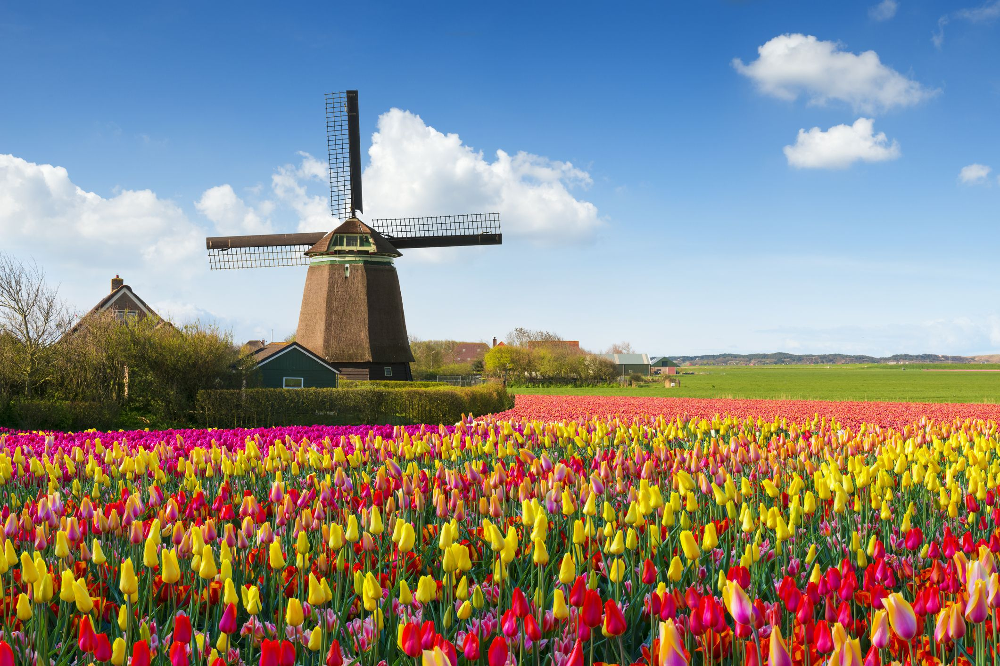
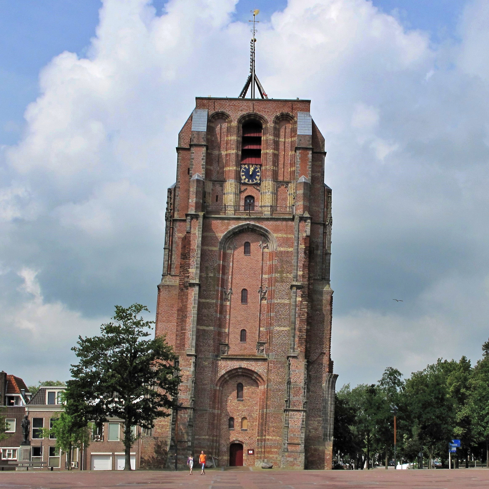

Wat is CKV
**CKV (Culturele en Kunstzinnige Vorming)** is een vak waarin je kennismaakt met kunst en cultuur. Je leert over dingen zoals muziek, theater, schilderijen en dans. Ook bezoek je soms musea of voorstellingen. Het belangrijkste is dat je ontdekt wat jij mooi of interessant vindt en waarom. Je maakt opdrachten en denkt na over wat je hebt gezien en gedaan. CKV helpt je op een leuke manier creatief te zijn en nieuwe dingen te ontdekken!

De C in CKV van Cultuur deze foto laat de nederlandse cultuur zien zoals windmolens tulpen

De K in CKV van kunst de Mona Lisa is een van de bekenste kunstwerken ooit.

De V in CKV van Vorming de Oldehove is een bekende toren in leeuwarden